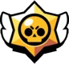

Guía para principiantes
Brawl Stars es un juego de disparos en tercera persona en el que juegas con tu Brawler elegido y compites en una variedad de Eventos. En estos Eventos, te enfrentas a otros Brawlers mientras intentas completar un objetivo especial único para cada tipo de Evento.


Controles
Para mover su Brawler, arrastre su dedo en el lado izquierdo de la pantalla para manipular el joystick virtual, y su Brawler se moverá en la dirección en que se tira del joystick. Arrastrar el dedo en el lado derecho de la pantalla manipulará el joystick de ataque. Arrástrelo para apuntar y suéltelo para disparar. Alternativamente, se puede tocar el joystick para realizar un ataque de "fuego rápido". Esto hace que el Brawler dispare automáticamente una vez al objetivo más cercano, o si no hay ninguno dentro del alcance, el Brawler dispara hacia el objeto dañino más cercano (jugadores, cajas de energía, etc.). Para cancelar un disparo dirigido, arrastre el joystick de ataque hacia su centro.
Cada Brawler tiene su propia "Super habilidad". El Super se carga golpeando a los Brawlers enemigos. Una vez que esté completamente cargada, se puede utilizar con el joystick amarillo ubicado en el lado derecho de la pantalla, debajo del joystick de ataque. El Super se disparará en la dirección en la que apunte el joystick. Similar al joystick de ataque básico, el Super joystick también se puede tocar simplemente para disparar automáticamente el Super al objetivo más cercano. La carga del Super no se pierde si tu Brawler es derrotado. Al igual que su joystick de ataque, puede cancelar su Super objetivo arrastrando el joystick hacia su centro.
Las posiciones de los controles en la pantalla se pueden ajustar en la configuración del juego.
Se muestran dos "barras de estado" sobre la cabeza de tu Brawler. El de arriba indica cuánta salud le queda al Brawler. La salud se pierde cuando el Brawler recibe daño, y si la salud del Brawler llega a cero, el Brawler es derrotado. Si el Brawler no ataca ni recibe daño durante 3 segundos, su salud comenzará a regenerarse con el tiempo. La barra inferior tiene segmentos que indican cuántos ataques tiene preparado el Brawler. La mayoría de los Brawlers pueden tener un máximo de tres ataques listos a la vez, y cada ataque vacía un segmento completo. Los ataques se regeneran automáticamente con el tiempo.
Los Brawlers tienen dos habilidades estelares seleccionables y uno o dos gadgets. Los poderes estelares son habilidades pasivas que se pueden desbloquear en el nivel de poder 9 y los gadgets son habilidades activas de uso limitado que se pueden desbloquear en el nivel de poder 7. Los gadgets tienen un tiempo de reutilización de 5 segundos entre sus 3 usos.
Pelea
Las batallas se inician en la pestaña Brawl. Hay 8 tipos de eventos principales: Atrapagemas , Supervivencia, Supervivencia Dúo, Balón Brawl, Atraco, Caza Estelar y Zona restringida, en las que luchas contra otros jugadores. Cada evento tiene un objetivo principal diferente. Consulte sus páginas individuales para obtener más información.
Pueden estar activos hasta 7 eventos diferentes a la vez. En ese espacio se muestra el tiempo antes de la siguiente rotación de un espacio de evento. Cuando se alcanza ese tiempo, comienza un nuevo evento y se pueden reclamar 5 tokens gratis simplemente tocando el espacio del evento.
Al jugar partidos, obtienes fichas, que se utilizan para progresar en el Brawl Pass. El banco de fichas puede contener hasta 200 fichas a la vez, y se vuelven a agregar 20 tokens al banco cada 2 horas y 24 minutos, con un límite de 200. Si gana todos los tokens en el banco, puede volver más tarde. para ganar más.
Además de los eventos normales, cada fin de semana se abre un evento especial en el cuarto espacio del evento. No están clasificados, lo que significa que ganar o perder en estos eventos no afecta el recuento de Trofeo. Estos eventos otorgan grandes cantidades de Tokens en forma de misiones. El evento especial puede ser Todos contra uno, Pelea robótica, Megabrawler o Irrupción urbana.
Cajas
Las Cajas son la forma principal de obtener Brawlers y otros artículos. Se pueden obtener en la Tienda, Brawl Pass o Trophy Road. Las Cajas Grandes equivalen a 3 cajas regulares y las Megacajas equivalen a 10 cajas regulares.
Las Cajas pueden contener Monedas, Puntos de fuerza, Gadgets, Habilidades Estelares, nuevos Brawlers y un 3% de probabilidad adicional de que duplicador fichas duplique las siguientes 200 Fichas obtenidas en las partidas. Las posibilidades de obtener artículos son fijas, mientras que la posibilidad de obtener un nuevo Brawler se basa en su valor de suerte personal. No se pueden recibir Brawlers duplicados, y una vez que se recolectan suficientes Puntos de Fuerza para llevar a un Brawler al nivel 9, no se encontrarán más Puntos de Fuerza para ese Brawler.
Cuando todos los Brawlers desbloqueados por el jugador tengan la cantidad máxima de Puntos de Fuerza, las Cajas ya no contendrán Puntos de Fuerza, y se otorgarán más monedas en su lugar según el doble de la cantidad de Puntos de Fuerza que se hubieran recibido en su lugar. La cantidad de monedas y puntos de poder recompensados puede variar significativamente; sin embargo, se establece un mínimo para garantizar el progreso de cada caja abierta.
Clubes
Los clubes son grupos sociales dentro del juego a los que los jugadores pueden unirse para charlar y unirse a salas para jugar juntos. Los clubes se pueden crear o unirse desde la pestaña Social del juego. Los clubes también tienen sus propias tablas de clasificación basadas en las puntuaciones Trofeos de los clubes. La puntuación de trofeos de un club se calcula sumando los recuentos de trofeos individuales de los miembros del club. Cada Club puede tener hasta 100 miembros.
Recompensas Diarias
Las recompensas diarias son donde recibes elementos como puntos de fuerza, duplicadores de fichas, monedas, emotes, skins e incluso Brawlers, pero rara vez dan brawlers, emotes y skins. Las recompensas diarias te las dan cada 24 horas.
Consejos
- Conoce tu rol. Diferentes Brawlers son mejores para diferentes cosas. Por ejemplo, El Primo puede recibir mucho daño y proteger a otros Brawlers en su equipo, pero Brawlers como Brock son los mejores para el apoyo de largo alcance.
- Sepa qué tan rápido viajan los ataques de su Brawler. Si el ataque de tu Brawler tarda un poco en llegar a su destino, debes apuntar delante de tu objetivo si se está moviendo, o fallarás.
- Sepa cuándo retirarse. Los luchadores se curan cuando no disparan ni reciben golpes. Si su salud está baja, puede ser mejor ponerse a cubierto por un tiempo para recuperar su salud, pero tenga en cuenta que esto también podría darle a su oponente la oportunidad de hacer lo mismo.
- Intenta esquivar los ataques enemigos. Si bien los ataques a corta distancia no son fáciles de esquivar, los proyectiles de largo alcance, como el cohete de Brock, se pueden esquivar con las técnicas de ametrallamiento correctas. Una técnica común es caminar de lado y girar tan pronto como vea que se acerca un ataque a distancia. Debido a que el enemigo probablemente cronometrará sus ataques apuntando hacia adelante, su ataque fallará.
- El hitbox de un Brawler (el área donde los ataques pueden conectarse con él y causar daño) se muestra en el anillo alrededor de sus pies, no en el Brawler en sí. Este anillo es relativamente del mismo tamaño para todos los Brawler. Hay algunas excepciones de Brawlers con un hitbox un poco más grande, incluidos Pam, 8-BIT, Sandy y todos los pesos pesados.
- El hitbox de un Brawler es un poco más grande que un solo bloque de cobertura. Si quieres estar completamente protegido, escóndete detrás de dos bloques.